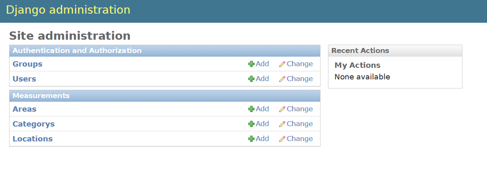
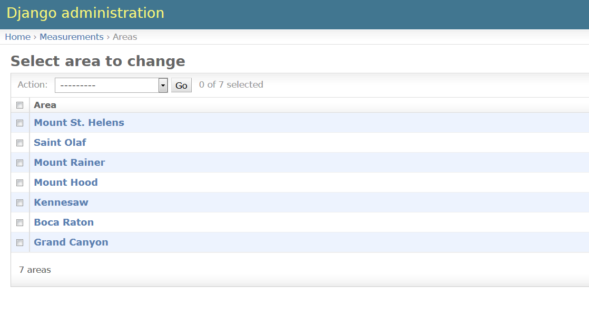
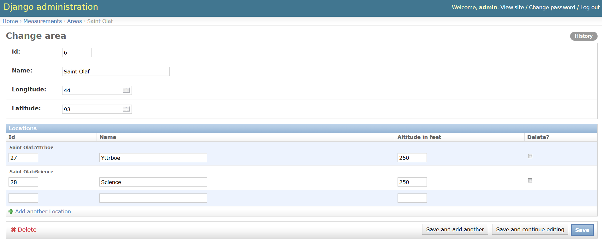
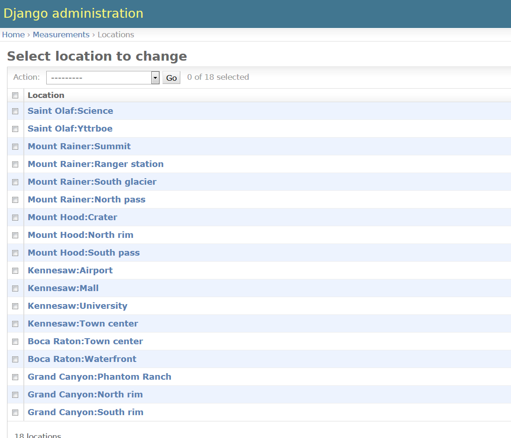
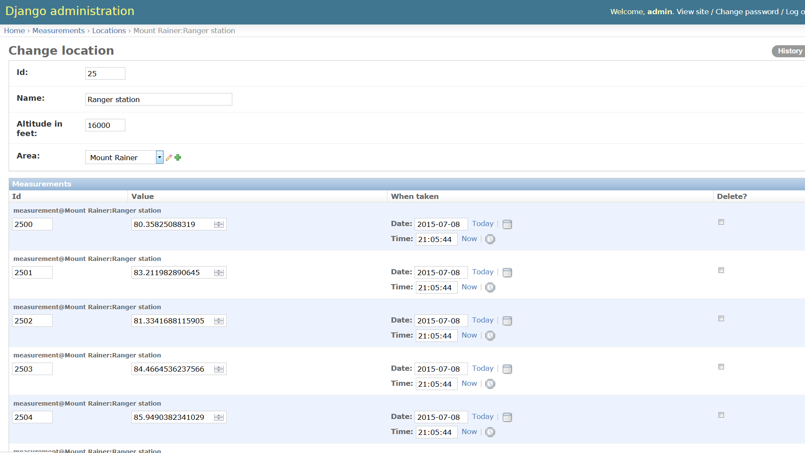
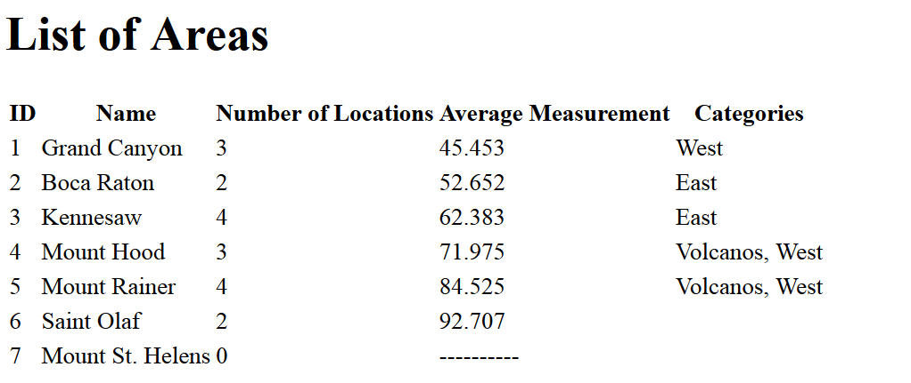

Measurements in Django
- Introduction
- Model (35%)
- Administrative Interface (35%)
- View (30%)
- Testing
- Submitting the Assignment
Introduction
In this assignment you will an application in Django. This application will include a model, some administrative interface customization and a single view.
The application model is based on the measurements example as described in the Measurements Example page
Create a Django project with an application named measurements.
This will be the base project for this assignment.
You should name the project something like assign_07 so that there is no confusion between
the project and the application.
Please note: Categories have been removed from the requirements! However categories are still mentioned in various places (the measurements overview and some of the images). Please try to work around those, but do ask if you can’t figure something out.
Model (35%)
Some code will be provided to initialize data for this example, but you will need
to be careful about field and class names.
All classes described here are model classes, so they extgend models.Model.
Each class should define __str__ to return the name of the instance, except
for Location and Measurement which are described below.
-
Area-
id: integer, primary key -
name: characters -
longitude: float -
latitude: float - Several helper methods
-
number_of_locationswhich returns the number of locations for this area -
average_measurementwhich returns the average of the measurements for this area. If the area has no measurements then returnNone. -
category_nameswhich returns a string with a list of categories that this area belongs to. The names should be comma separated. If the area belongs to no categories, return the empty string.
-
-
-
Location-
id: integer, primary key -
name: characters -
altitude: integer -
area: foreign key referencingArea - The
__str__method should return the concatanation of the name of the area the location belongs to, a colon and the name of the location. So, something like “Grand Canyon:North Rim”
-
-
Measurement-
id: integer, primary key -
value: float -
date: a date-time field -
location: A foreign key referencingLocation - The
__str__method should return the concatenation of the string “measurement@” with the location string representation. So, something like “measurement@Grand Canyon:North Rim”
-
The archive
management.zip
contains supplemental code for the project.
Unzip the archive so that the management directory is inside the application directory measurements.
The files in the this archive add two commands to management.py.
These commands are use to add data to the model database and to clear the data.
Give these commands in the management.py console if you are working in PyCharm.
-
add_data: this creates objects and persists them. The data is essentially what you have been using in the measurements examples before. -
clear_data: this clears all the model instances
Administrative Interface (35%)

Set up the adiminstrative interface so that Area, Location and Category are listed
on the main admin page.
 Here is a list of the areas set up by the management commands provided above.
Here is how one area will look. Note that locations are listed here as well as on the main admin page. 
Here is the list of locations reached from the main admin page. 
Here is one location with the associated measurements listed below. 
View (30%)

The app supports a single view, at the path /measurements.
This view presents a tabular summary of the data for all areas as shown at right.
Formatting floating point numbers in Django is handled differently from Jinja2.
In Django, use the floatformat filter.
Testing
- Your project will be unarchived.
- The database file will be cleared
- The
make_migrationand themigratecommands will be run - The
add_datacommand will be run- If the management command folder is not present, it will be added (no penalty)
- It is part of the requirements of this assignment that the
add_datacommand be supported by your implementation of the model classes.
- The
runservercommand will be run - The admin interface will be examined
- The path
/measurements/will be examined.
Your project will be tested on either Windows or Linux Mint. If you think there could be a problem, please put a comment in the dropbox specifying which OS to use.
If the project contains literal absolute file paths, such as c:/Users/CBS/db.sqlite, the project will
probably not work properly.
I will attempt to correct such problems, but substantial credit could be lost depending on the
amount of time necessary.
Submitting the Assignment
Zip up your project and submit it through the appropriate D2L folder.